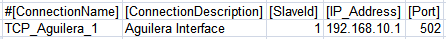
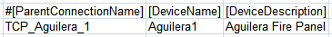
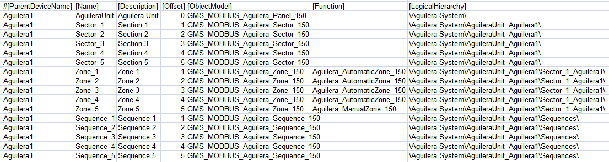

Aguilera AE/SA Cx Configuration (CSV) File
To integrate an Aguilera AE/SA Cx fire panel into Desigo CC you must first prepare a textual configuration file in CSV (comma separated values) format that defines the data structure for the panel.
To do this, use Microsoft Excel or a text editor to edit the configuration file.
NOTE: Use a comma (,) as separator.
You can then use this file to import the configuration.
For reference information about the Modbus configuration CSV file, see CSV File for Modbus Device Import.
To obtain pre-configured CSV sample files to edit, contact the Technical Support team.
Having pre-configured CSV files with offsets already defined for each object reduces the risk of reading wrong addresses from the management station. Also, having examples of function mapping already defined can be useful when adding new points and starting from an example of an existing point type included in the CSV file with functions defined.
Pre-configured sample files can be used to create custom configuration files by adding or removing sectors, zones, and sequences according to the specific configuration.
Additionally, since the device points are imported into Management View as a flat list, pre-configured sample files also provide a predefined logical view that can be used for the configuration required on the field site.
As for the logical view, pre-configured sample files can be also modified to automatically create a user-defined view out of the import. This part is not provided in pre-configured CSV files because user views strictly depend on the customer’s requirements that can be easily added.
Aguilera AE/SA Cx CSV Configuration File Sections
Section | Description |
[Connections] | Communication channels between Aguilera and Desigo CC. 1 interface for each device must be defined. |
[Devices] | Aguilera fire panel. |
[Points] | Physical points. |
Aguilera AE/SA Cx CSV Connections Data
The [Connections] section comprises the following data:
Data | Description |
[ConnectionName] | Interface name. Special characters are not allowed. |
[ConnectionDescription] | Interface description to display in System Browser. |
[SlaveId] | Aguilera Modbus subordinate address. |
[IP_Address] | Interface IP address. |
[Port] | TCP Modbus port. Default value: 502. |
[Alias] | Not used. |
[FunctionName] | Not used. |
[Discipline ID] | Not used. |
[Subdiscipline ID] | Not used. |
[Type ID] | Not used. |
[Subtype ID] | Not used. |

Aguilera AE/SA Cx Devices Data
The [Devices] section comprises the following data:
Data | Description |
[ParentConnectionName] | Name of the interface assigned to this device. |
[DeviceName] | Device name. |
[DeviceDescription] | Device description to display in System Browser. |
[ObjectModel] | Not used. |
[Alias] | Not used. |
[Function Name] | Not used. |
[Discipline ID] | Not used. |
[Subdiscipline ID] | Not used. |
[Type ID] | Not used. |
[Subtype ID] | Not used. |
[LogicalHierarchy] | Used to create a hierarchy in the logical view. |
[UserHierarchy] | Used to create a hierarchy in the user-defined view. |

Aguilera AE/SA Cx Points Data
The [Points] section comprises the following data:
Data | Description |
[ParentDeviceName] | Name of the device to which the point is connected. |
[Name] | Point name. Special characters are not allowed. |
[Description] | Point description to display in System Browser. |
[FunctionCode] | Not used. |
[Offset] | Used in combination with the import rules table to achieve the correct value of the register. The following rules apply to Aguilera CSV configuration files:
|
[SubIndex] | Not used. |
[DataType] | Not used. |
[Direction] | Not used. |
[Object Model] | Name of the object model linked to this point.
|
[Property] | Not used. |
[Alias] | Not used. |
[Function] | “Function name” used to automatically associate the function (for example, “Aguilera_AutomaticZone_150”) to the point instance during the import of the CSV file. |
[Discipline ID] | Not used. |
[Subdiscipline ID] | Not used. |
[Type ID] | Not used. |
[Subtype ID] | Not used. |
[Min] | Not used. |
[Max] | Not used. |
[MinRaw] | Not used. |
[MaxRaw] | Not used. |
[MinEng] | Not used. |
[MaxEng] | Not used. |
[Resolution] | Not used. |
[Eng Unit] | Not used. |
[StateText] | Not used. |
[AlarmClass] | Not used. |
[AlarmType] | Not used. |
[AlarmValue] | Not used. |
[EventText] | Not used. |
[NormalText] | Not used. |
[UpperHysteresis] | Not used. |
[LowerHysteresis] | Not used. |
[LogicalHierarchy] | Used to create a hierarchy in the Logical View. |
[UserHierarchy] | Used to create a hierarchy in the User-Defined View. |
